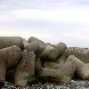
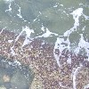
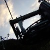
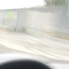
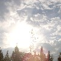
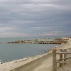
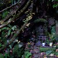

strange music page
* * * 2002.10
-2002.10.31 NOISE
#えーとなんか渋谷のディスクユニオン(新装開店)NOISE/天皇とPink Floyd/The Early Singlesを買いました。
Pink FloydのはSyd Barrettの初期のシングルのブートです、この頃のってこのブート位でしか聴けないんですよね、結構イイのに。
んで、もう1枚が強烈でした。なんだか再発されてるとか言う話を聞いていたNOISE(マヘルの工藤冬里と大村(現・工藤)礼子)のアルバムです。80年代マイナーの極北っていうか、ほんと凄いです。かっちょいい。
♪pink floyd/ユージン、斧に気をつけろ
-2002.10.25 西武・・・
#ペナント中の阪神みたいでした・・・（26才・近鉄ファン）
♪mono fontana
-2002.10.25 新潟
#温泉と魚介類とコシヒカリアイス
日本海と朝鮮半島（嘘、佐渡）
天気良くって気持ちよかったです。
|
 |
 |
 |
 |
 |
|
 |
 |
|
♪sketch show/audio sponge
-2002.10.20 鳩、再び
#土曜の朝、少しだけ空いてた窓から鳩が部屋の中に入ってきました。寝てたんですが。
PCの上とかに留まってこっちの方を何考えてるかわからない目で見てました。夏の暑い日に窓を開けっ放にして家に帰ってきた時に誰かが居たような気がしてたのは、どうやら奴の仕業じゃないかと思われます。
ざけんな、その内焼いて食ってやる。
関係ないけど渋谷ディスクユニオン改装セールでNav Katze/Switch Compilation 1986-1987が500円。
♪上野耕路/Chamber Music
-2002.10.16 新宿タワーレコードから降りる階段
もう一枚、本当はSKETCH SHOWでも買おうかと思ってたのがTHE FEROCIOUS SOUND OF HYDRO-GURUを試聴したら堪らない気分になり、買っちゃいました。DMBQの増子真二と吉村由加の変なサイケガレージバンド・・・というかプログレ好きな皆様、1曲目が大変GURU GURU状態で堪らないです。あ、BLUE CHEERっぽくも。
あ、これだけは言っておこうと思ってたんだ。松屋でから揚げ丼食べたら、またお腹痛くなりました、皆様も気をつけましょう。
♪the ferocious sound of hydro-guru
-2002.10.13 秋晴れの三連休
#特にイベント無いです。ヒマです。
で、デジカメとか買ってきました。東芝のT10、フェイスプレートが取り替えられるヤツ、安かったので(\17,500)。
右のは早速撮ってみたやつです・・・ピントどこだよ？
そのうち慣れます。
♪Buffalo Daughter/I
-2002.10.12 パスカルズとほとらぴからっ
#おとといはほとらぴからっのライヴを見てきました。あーもー相変わらず不思議な空間で。
あとパスカルズの新譜を買ってきました、なんだか思ってたよりも風通しの良い音楽。
今、塩ラーメン作ったんだけど、切り胡麻入れ忘れた。
♪パスカルズ/パスカルズが行く
-2002.10.6 80's
#FLIP SIDE of the MOONの山下さんが出てる80s POPSICLEって行ってきました。
関係ないけど、その銀座へ向かう銀座線、虎ノ門で地下鉄のドアが閉まる瞬間、物凄いスピードでドアを無理矢理開いて乗り込んできたオッサンは、おもむろに鞄の中からゴルゴ13のコミックス（コンビニで売ってる安いヤツ）を取り出して、妙にすがすがしい顔をしてゴルゴ13を読んでました。一仕事終えた男の顔ってヤツか？
会場ではウツボカズラさん、まろんさんなど初めて会う方とかもいて、なんだか不思議な感じ。
あ、DJ聴いてて人それぞれの80年代感ってのが有るんだなと思いました。中学生の時によく聴いてた谷村有美がかかった時はちょっとキちゃいました。
♪鈴木さえ子/Studio Romantic
-2002.10.3 風邪中
#PSで\1800で出てたwizardry #4 return of the werdnaなんかやってます。LAKANITO一発で死ぬワードナ・・・弱い・・・
風邪で頭痛いよ。
♪Samla Mammas Manna/Dear Manna